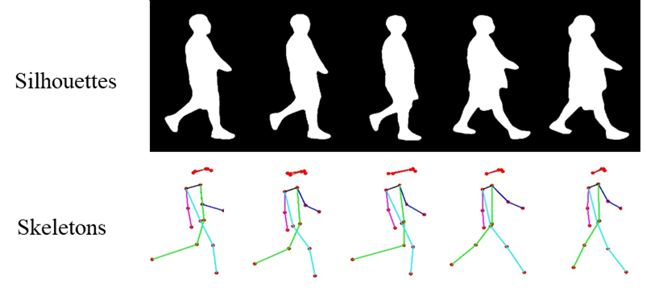

Description
D-Gait is designed for the purpose of identifying depression based on gait analysis, which has great significance in mental health diagnosis and treatment. D-Gait contains two modalities of data, namely silhouette and skeleton, which are obtained through advanced motion capture technology. The silhouette data provides the outer contour of the subject's body, while the skeleton data provides the joint positions and movements.
D-Gait contains gait data captured from different types of clothing and multiple viewing angles. The clothing types include a backpack and two sets of regular clothes. The camera angles cover 16 different positions ranging from 0 to 180 degrees, capturing both front and back views. By incorporating diverse angles and clothing options, we aim to emulate a comprehensive environment reflecting the intricacies and variations of real-world scenarios. This approach is intended to enhance the robustness and adaptability of the model for real-life applications.
The labels of D-Gait are derived from a combination of three widely used depression scales, namely the Patient Health Questionnaire-9 (PHQ-9), the Self-rating Depression Scale (SDS), and the Generalized Anxiety Disorder-7 (GAD-7). By combining the results of these scales, a comprehensive assessment of the subject's depression level is obtained, which serves as the ground truth for D-Gait.
D-Gait offers researchers and developers a valuable resource to explore the relationship between gait and depression, and to develop accurate and reliable depression recognition models based on gait analysis. It also provides a platform for evaluating and comparing different gait analysis approaches, paving the way for future advancements in mental health diagnosis and treatment.
Download
Dataset Usage Rules
- This dataset and its subsets can only be used for academic research.
- Applicants are not allowed to use this dataset and its subsets for any commercial purposes.
- Without permission, it is not allowed to forward, publish or distribute this dataset or its subsets to any organization or individual in any ways or by any means.
- Any copy and sharing requests should be forwarded to the official contact email.
- Please cite our paper if D-Gait dataset is useful to your research:
论文链接
bib
Dataset Access
- All users can obtain and use this dataset only after signing the Agreement and sending it to the official contact email address.
- For students, research groups or research institutions who need to obtain this data for academic research, signatures of both the Responsible Party and the Point of Contact are required. The Responsible Party should be the tutor of the research group or the representative of the research institution, and has the authority to be responsible for the matters related to the Agreement. (The Responsible Party should be fixed personnel of the institution, students and other floating personnel cannot be the Responsible Party). The Point of Contact (POC) is an individual with detailed knowledge of the dataset application. In some cases, the Responsible Party and the POC may be the same person. At the same time, the homepage of the Responsible Party (or the homepage of the research group, laboratory, Department, etc., including the basic information of the Responsible Party) must be provided to prove the role of the Responsible Party.
- Please send the signed Agreement to the official contact email (renmin@bnu.edu.cn) in the form of scanned copy. Please CC the Responsible Party when sending the email.
Contact
Please contact renmin@bnu.edu.cn for questions about the database.